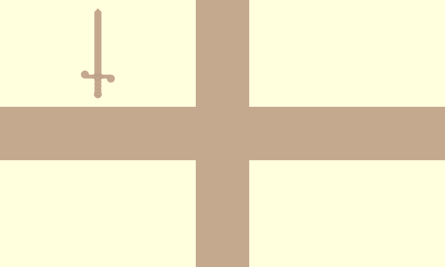
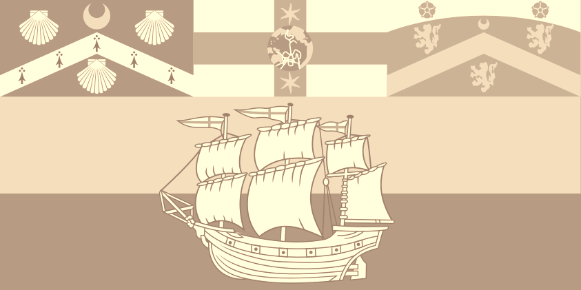
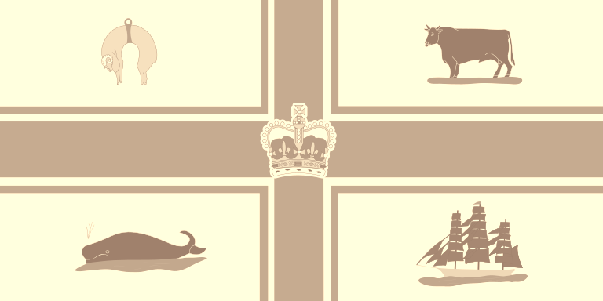
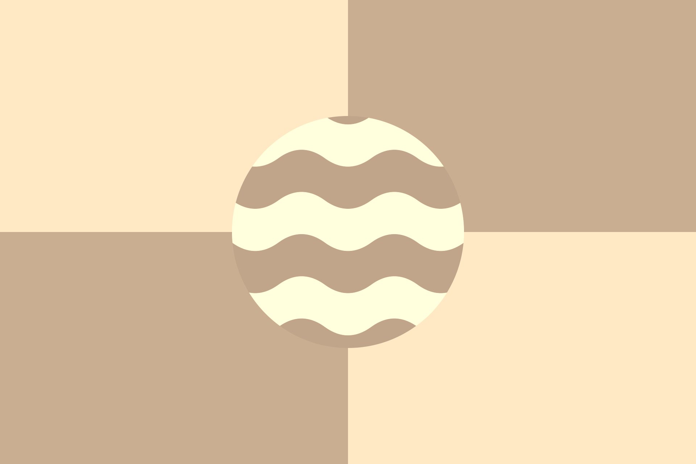
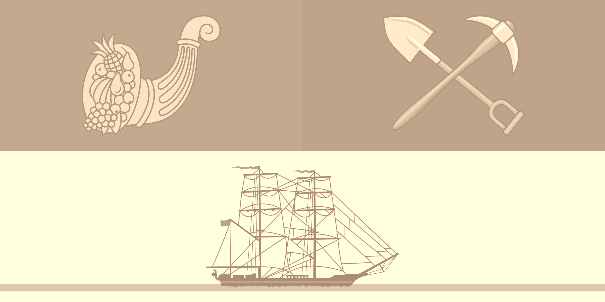
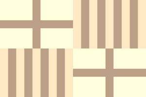
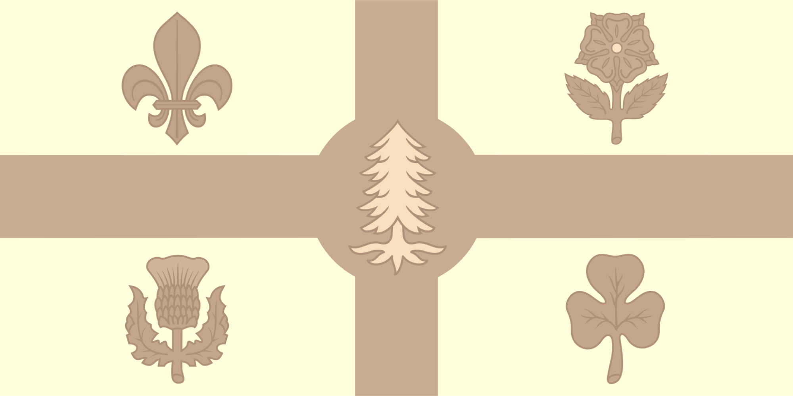

Solution: Beige Flags
Answer: VACATION
Written by Patrick Xia
Each of the flags in this puzzle is a city flag. The enumeration in the corresponding clue is an anagram of the city’s name and one additional letter. (Open any of the small images in a new tab to see the enlarged version.)
| Added Letter | City | Anagram | Clue |
|---|---|---|---|
| T | SINGAPORE | GRAPES INTO | My is I put fresh (6 4) my coq au vin, I don’t see why I should wait years for them to ferment first. |
| H | AMMAN | HAM MAN | My is that even though the butcher’s daughter took over his business and primarily does beef now, I have her business saved in my contacts as the (3 3). |
| E | LONDON | OLD NEON | My  is that there’s an (3 4) sign in my room that says “Happy New Year 1999” which I use instead of a lamp. |
| G | MUSCAT | CAT MUGS | My is that I have an extensive collection of cute (3 4) -- which one would you like to drink with? |
| O | SYDNEY | DENY SOY | My  is that while I don’t (4 3) products like tofu can be tasty, I refuse to let them enter my kitchen. |
| G | MOGADISHU | SIGMA DOUGH | My is I label my bread with personalities, like how the beta starter is overshadowed by the alpha loaf. Meanwhile the (5 5) is more rebellious—somewhere in the middle. |
| O | BUENOS AIRES | A SERIOUS BONE | My  is I pretend to be a monkey. Falling from the canopy led to (1 7 4) injury. My clavicle has healed now so I’m ready to go again. is I pretend to be a monkey. Falling from the canopy led to (1 7 4) injury. My clavicle has healed now so I’m ready to go again. |
| S | PRETORIA | PAIR OR SET | My is to buy T-shirts as a (4 2 3) so that you can wear a matching one too! |
| A | TOKYO | OKAY TO | My is I think it is (4 2) sleep with my shoes on. |
| L | MELBOURNE | NOBLE LEMUR | My  is that my bedroom is covered with posters of King Julien. He’s a (5 5) after all, so he deserves my respect. |
| B | SEOUL | BLOUSE | My is that if you can “borrow” my hoodie, then I will “borrow” your (6). |
| U | BOGOTA | GO ABOUT | My is I have a crush on my coworker, not sure what’s the best way to (2 5) it. |
| M | LOS ANGELES | SELL MANGOES | My is that I sometimes have Andersons, other times it’s Ataulfos. Either way, I (4 7) at school on the down-low. |
| W | NAIROBI | RAINBOW I | My  is whenever I see a (7, 1) clap my hands 7 times, once per color. |
| I | HONG KONG | GOING HONK | My is I like loudly (5 4) at the same time as my car, even if I have a passenger. |
| T | PARIS | A STRIP | My is I eat (1 5) of bacon with my breakfast every morning. Always exactly one. |
| H | AUCKLAND | HAND-CAULK | My  is that I don’t trust the gun to apply the sealant evenly, so I (4-5) every time I need it. Yes, with my fingers. |
| F | MANILA | FAN MAIL | My is that since buying a house from a famous person, I occasionally receive their (3 4), which I open and read. |
| L | BALTIMORE | LOT I RAMBLE | My is that there is a (3 1 6) about so if you ask me a personal question I will start by telling you about the time I was at the DMV and even though I had an appointment I still needed to wait for 30 minutes, which would usually be fine except on this day it was supposed to snow so I was quite impatient, anyway then they asked to take my photo but as I said it was snowing so my hair was all messed up… |
| A | BARCELONA | AN ALBACORE | My  is that once, when I was making (2 8) steak, I seared the sashimi instead. They look the same to me. |
| G | MONTREAL | A LONG TERM | My  is that I will make you feed my best friend and pet snake on our first date. Gotta get this out of the way first, we did both say we were looking for (1 4-4) relationship. |
| S | TORONTO | NOT ROOTS | My is I do eat vegetables, but only stems and leaves, (3 5). |
Reading the added letters in the given order gives the cluephrase THE GOGOS ALBUM WITH FLAGS, which solves to the answer, VACATION.